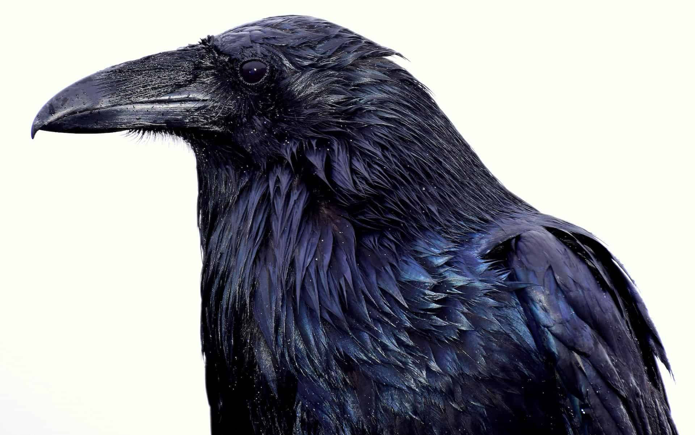

About Crows

Crows are large birds with shiny black feathers. They often live together in large families. They are known for their loud voices and their intelligence. These clever, curious birds have a reputation as thieves and pranksters. They have been known to fly off with all sorts of little shiny objects, including people's car keys. Pet crows have even learned to mimic, or imitate, human speech. - Britannica Kids